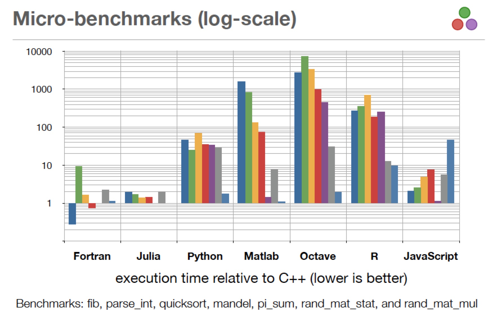
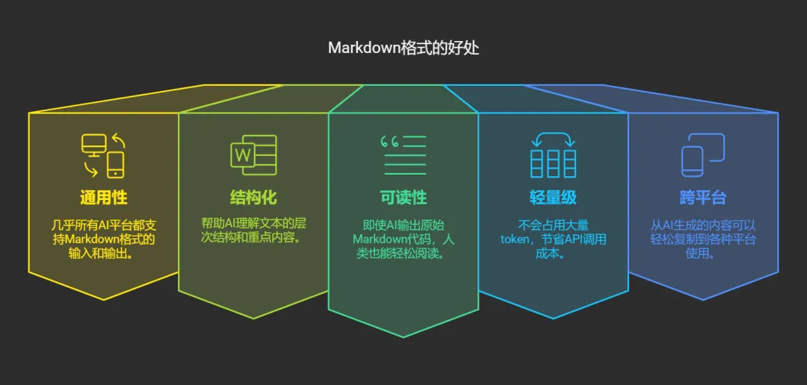
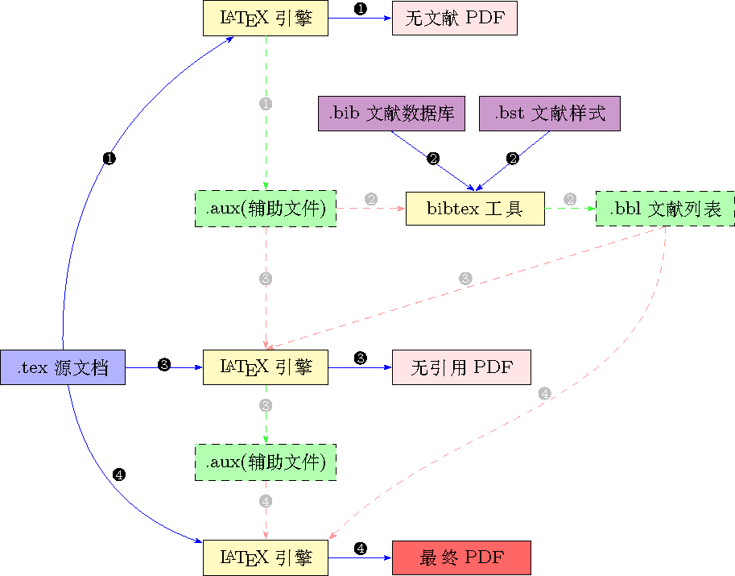
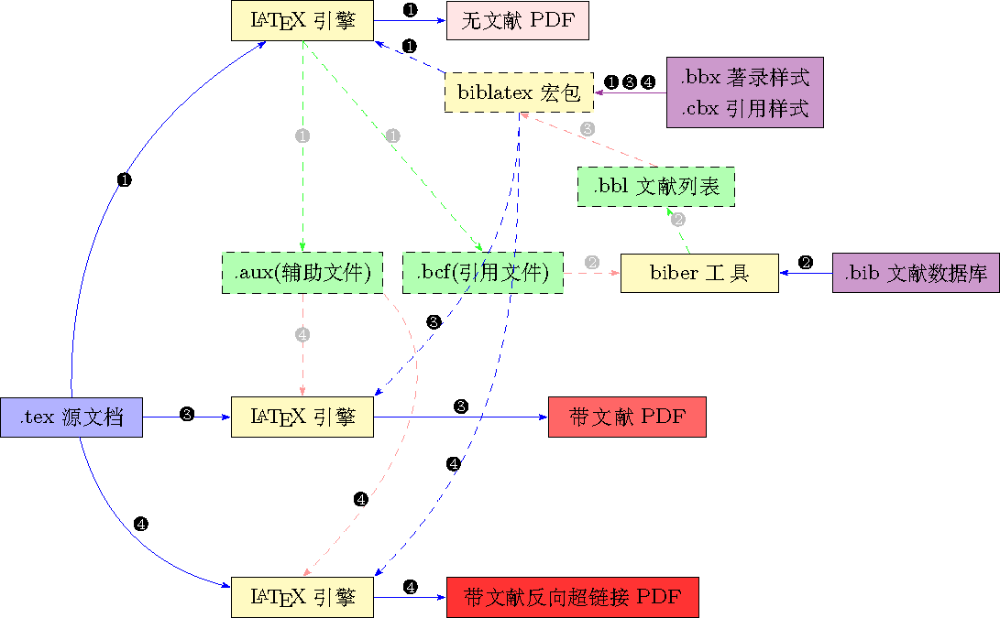
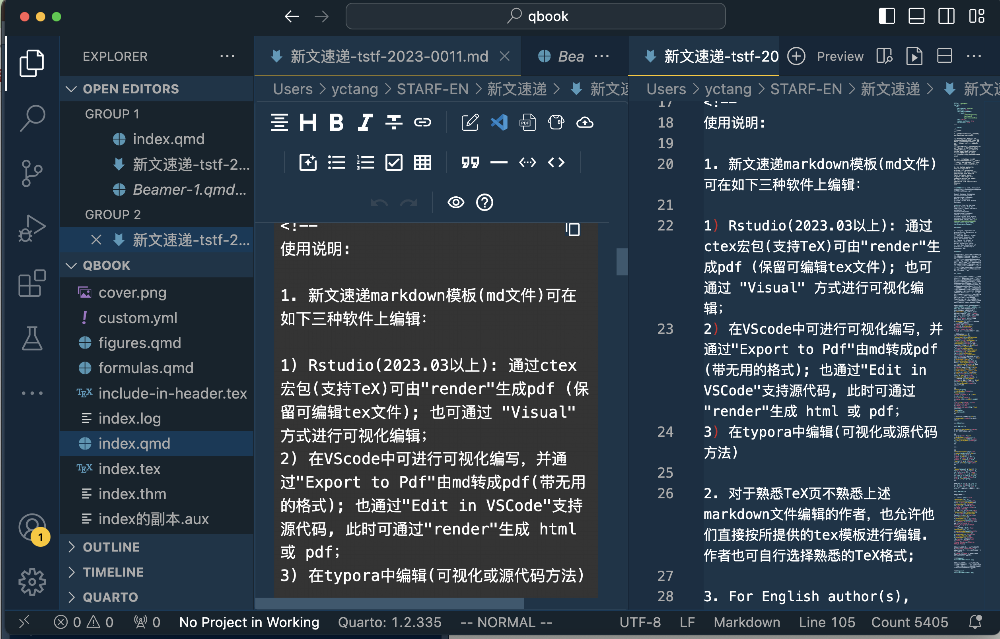
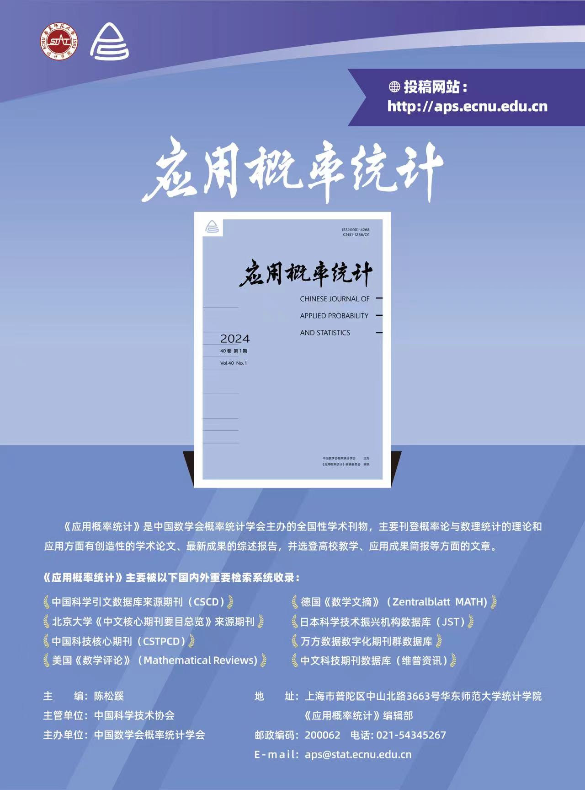

以数据分析为中心的全场景生态建设：
统计教学、科研、出版的新范式探索
东北师范大学数学与统计学院 (2025-11-20)
汤银才
华东师范大学 统计学院
2025-11-05
自我介绍
- 从教近 41 年
- 《Statistical Theory and Related Fields》执行主编 (2007.6)
- 《应用概率统计》编辑部主任(2004.9 - 2014.7, 2024.5 - 现在)
- 研究兴趣: 贝叶斯统计，大数据统计，可靠性统计
- 著作: 《R语言与统计分析》(第二版)、《可靠性统计》(第二版)、《贝叶斯统计》(第二版)
- 译著: INLA系列丛书(6本，2023-2024)
- 忠实的贝叶期学派
- 中国 R 会议(上海)的发起人之一
- R 与\TeX的深度用户，开发了众多的 \TeX, Rmarkdown, Quarto 模板 (github: tangyc8866)
I. 文学化统计编程的探索与思考
目录
I. 文学化统计编程的探索与思考
II. Quarto: 数据科学新范式的基础
III. 模板分享
附录1. \TeX中使用markdown
附录2. 基于Quarto的幻灯片制作
附录3: Quarto revealjs 功能介绍
1.1 三个思考
思考1: 大数据时代数据分析人才应具备哪些素质？
- 目标: 赋能大数据人才培养
统计思维
算法思维
数据思维
交叉思维
创新意识
团队/协同精神
提问能力
写作, 逐步被AI取代
思考2: 如何打造一个高效的教学与科研生态?
- 目标: 赋能教学与科研
通过标准化与个性化的权衡
建立教学与科研的生态
提升教学与科研的效率
标准化，个性化 要？
标准化，个性化 怎么做？
标准化基础上个性化，可落地！
思考3: 如何打造一个高效的数据科学写作/出版系统?
- 目标: 赋能期刊与图书出版
通过Quarto平台
使编程与写作融为一体
建立作者与出版社的桥梁
为读者提供良好的阅读场景
多格式出版
PDF
HTML
ePub
Word
我的答案
文学化统计编程, Knuth, 1984
编程与写作共存 (knitr)
编程(code)
写作(prose)
标准化定制
CSS/SCSS 定制
\TeX 定制 . . .

1.2. 编程语言的选择?
编程/分析工具应具备的品质
极易入门(基本功能简单)
费用低廉(免费)
代码开放/开源(共享)
无平台限制(共享)
求助方便
良好生态与社区
数据分析高效(工具包)
可视化容易而强(工具包)
编程能力强(可扩展性)
有卓越的IDE
过去与现在的统计软件
Excel
SAS (好贵，好重)
Matlab
SPSS
Minitab
Fortran
Eviews
Stata
R
Python
Julia
Shiny/Observable—动态可视化
三大开源语比较: R, Python, Julia

R与Python的比较
R:
- 一种解释性程序语言，专注于统计建模与数据分析
- 拥有丰富的统计计算和数据可视化包
- 良好的社区和开源生态系统非常活跃，已经大量R包(超过2万)
- 轻松地处理大型数据集和矩阵(借助R包)
- 可实现和Python的pandas媲美的高速数据处理能力
- 缺点: 效率相对较低
Python:
- 一种通用的编译语言，可用于机器学习
- 拥有丰富的机器学习、深度学习库
- 社区和开源生态系统也非常活跃，有大量的开源库(12万)
- 支持多线程和分布式计算，可更好地处理大规模数据集
- 拥有更多的库(如NumPy和Pandas等)，可以实现更加高效的编程
- 缺点: 统计计算/建模能力偏弱
R vs. Python, 选择?
当前主流的数据分析语言
R: 倚天剑
Python: 屠龙刀
个人建议:
统计学院: R为主
工程类学院: Python为主
1.3. 写作工具的选择?
AI 时代的写作: 测试AI工具
提示词-1: 介绍一下Quarto的优势
贝叶斯分析中，VB方法相对于MCMC方法的优势
提示词-2: 用 R/Python/julia 语言编写一段代码,要求： 1) 生成1000个标准正态分布随机数，2) 画出其直方图, 3) 叠加一个密度函数，4) 输出为Quarto的代码块
提示词-3: 已经数据y_1, \dots, y_n 来自正态分布N(\mu, \sigma^2), 参数(\mu, \sigma^2)的先验分布为\pi(\mu, \sigma^2)\propto 1/\sigma^2, 求感兴趣参数\mu的边际后验分布.
测试用AI工具(LLMs):
AI写作
AI时代高效的写作：赋能学习、教学、科研与出版
流行的写作工具
Markdown
Markdown + \LaTeX
高效的写作工具
- Markdown (写作) + R/Python (编程) + \LaTeX (出版)
形成闭环: 兼顾标准化与个性，并嵌入到(院系)算力平台上
认识 Markdown
一种轻量级标记语言(使用纯文本格式编写文档)，由John Gruber于2004年创建。
语法极其简单，学习成本极低。
在与Deepseek, ChatGPT、Claude等大模型交互时，我们需要一种既能表达格式要求，又不会过于复杂的语言。Markdown恰好满足了这一需求.

# 一级标题
## 二级标题
- 功能特点
1. 易于学习
1. 语法简洁
1. 兼容性好
## 数学公式
$$
x^2+y^2=1
$$
## 黑体与斜体
- *斜体*
- **黑体**
- ***黑斜体***进化: 学习 TeX
最为优秀的写作语言，世界上90%以上的书都用 TeX 排的
- 极致排版质量
- 内容与样式(cls/sty)分离
- 学术写作全流程支持
- 跨版本/跨平台稳定性
优秀的在线平台: Overleaf—在线TeXLive
建议本地安装: TeXLive, tuna: 清华大学开源软件镜像站
推荐编辑器:
- TeXStudio (免费,跨平台)
缺点: 学习成本高
AI时代，精通\TeX似乎并不是必要的
使用\TeX的困扰
学习曲线陡峭: 需要学习大量专用命令
排错与调试困难: 错误信息晦涩难懂, 排错过程像“破案”
编写过程不直观: 非WYSIWYG，需要编译后才能看到最终效果，打断了写作的流畅性
精细调整复杂: 最头痛的是精确控制图片位置、复杂表格和数学公式
环境配置繁琐: 不同的发行版本有差异，宏包之间可能产生冲突，定制模板需要极高的技能
编译速度慢: 带交叉引用的需要编译多次
协作困难: 需要像Overleaf在线平台支持
编译方式: 过去常用\LaTeX, pdf\LaTeX, 而现在更倾向于使用Xe\LaTeX
编码依赖: 有时GBK无法显示，需要转码为UTF-8
\TeX编译流程
- XeLaTeX
- bibtex(由bibtex生成参考文献索引)
- XeLaTeX
- XeLaTeX

- XeLaTeX
- biber(由biblatex生成参考文献索引)
- XeLaTeX
- XeLaTeX

降低学习 \TeX 的成本
避免复杂的\TeX命令
普通用户: 以Markdown为主，少量使用\TeX命令 (如数学公式)
\TeX初级用户: \TeX中通过
markdown宏包使用markdown: 减少\TeX命令的使用1\TeX高级用户: 对于特定的任务(如毕业论文，期刊论文)，使用高度定制的\TeX模板
超级用户: 使用Rmarkdown或quarto模板，构建科研与出版的生态
充分利用Rstudio, VS Code中编辑
md,rmd,qmd文件的二种模式：- Source （源文件模式）
- Visual（可视化模式）。
- AI时代，精通\TeX似乎并不是必要的
II. Quarto: 数据科学新范式的基础
目录
I. 文学化统计编程的探索与思考
II. Quarto: 数据科学新范式的基础
III. 模板分享
附录1. \TeX中使用markdown
附录2. 基于Quarto的幻灯片制作
附录3: Quarto revealjs 功能介绍
2.1. Quarto 介绍
从 Rmarkdown 到 Quarto
由Posit (前身为Rstudio) 全新打造: 下一代的RMarkdown， 于2021年1月开始开发，2022年12月发布第一版
Quarto 是一个基于 Pandoc 的现代开源科技出版系统
功能更加强大和灵活: 适用于数据分析和机器学习等领域
支持代码块执行: R, Python，Julia，JavaScript Observable 等
支持多格式输出: PDF、HTML、\LaTeX、Word 等
支持自定义: CSS、JavaScript 和 \LaTeX 模板
Quarto IDE
开源免费、高效、跨平台IDE，Visual 与 Source 两种编辑模式自由切换


基于Quarto的文学化统计编程流程

Quarto工作原理

2.2. 文学化统计编程的要素
要素: 数学公式
通过\TeX/MathJax/KaTeX 实现
$$
\frac{\partial C}
{ \partial t}
+ \frac{1}{2}\sigma^2 S^2
\frac{\partial^2 C}
{\partial C^2}
+ r S
\frac{\partial C}
{\partial S}
\ = r C
$$ {#eq-black-scholes}\frac{\partial C} { \partial t} + \frac{1}{2}\sigma^{2} S^{2} \frac{\partial^{2} C} {\partial C^2} + r S \frac{\partial C} {\partial S} \ = r C \tag{1}
执行R代码
执行Python代码
插入本地图片


表格输出: kable
| Sepal.Length | Sepal.Width | Petal.Length | Petal.Width | Species |
|---|---|---|---|---|
| 5.1 | 3.5 | 1.4 | 0.2 | setosa |
| 4.9 | 3.0 | 1.4 | 0.2 | setosa |
| 4.7 | 3.2 | 1.3 | 0.2 | setosa |
| 4.6 | 3.1 | 1.5 | 0.2 | setosa |
| 5.0 | 3.6 | 1.4 | 0.2 | setosa |
| 5.4 | 3.9 | 1.7 | 0.4 | setosa |
| 4.6 | 3.4 | 1.4 | 0.3 | setosa |
| 5.0 | 3.4 | 1.5 | 0.2 | setosa |
常用chunk选项
| 选项 | 取值 | 含义 |
|---|---|---|
| eval | TRUE; FALSE | 执行或不执行代码 |
| echo | TRUE; FALSE | 显示/隐藏源代码 |
| warning | TRUE; FALSE | 显示/隐藏警告文本 |
| error | TRUE; FALSE | 错误消息 |
| emssage | TRUE; FALSE | 是否保留message()给出的消息 |
| tidy | TRUE; FALSE | 代码重排, 由formatR包支持 |
| prompt | TRUE; FALSE | 是否在R代码中添加代码 |
| comment | ‘##’; 字符串 | 在R代码前添加注释符 |
| fig.width | 数字, 英寸 | 设置图形的宽度与高度 |
| fig.height | 数字, 英寸 | 设置图形的宽度与高度 |
代码块选项设置
- knitr对代码的处理通过其中的选项控制
示例
华东师范大学硕博毕业生Quarto模板
上海对外经贸大学研究生QUARTO开题报告
大量quarto资源见:
2.3. \TeX 模板向自定义Quarto模板的转换
Quarto的工作原理
Quarto是基于Pandoc构建的
Quarto工作原理：
Quarto 使用 Pandoc 模板将 markdown 文件转换为渲染输出.
Pandoc 模板由特定格式的内容和变量(例如
$body$)组合而成，这些变量在渲染时会被文档中的实际值替换.
做法：
替换LaTeX(或HTML)完整模板，此虽可完全掌控渲染输出，但成本很高且易出错；
选择性替换LaTeX(或HTML)模板中的局部组件(以
.tex为后缀)；这是通过LaTeX Partials(局部模板)来实现的.
这些局部模板是构建称为Quarto扩展(个性化模型)的主要组件.
Quarto扩展(extensions)
Quarto扩展 是一种强大且灵活的Quarto增强方式，为他人提供可重复使用的自定义格式模板, 有以下几类扩展:
- 格式模板(format templates), 用于预定义文档的输出格式(html,pdf,word,epub,revealjs等) 及主题等。示例:
- 局部模板(partial templates), 用于定制文档的局部结构，如页眉、页脚、标题页等。 示例:
format:
pdf：
include-fefore-body: path/before-body.tex
html：
include-fefore-body: path/title-block.html短代码扩展(shortcodes)
过滤器扩展(filters), 用于修改文档内容或行为。
自定义函数(Custom Functions)
语法高亮扩展(Syntax Highlighting)
- quarto-extensions 共242个扩展,点击查看详细介绍
局部模板(partials)
定义: 局部模板(partials)为以特定顺序连接的 \LaTeX 小片段（.tex文件）, 这些文件必须采用Pandoc默认模板中预定义的特定名称. 详见Github: Pandoc LaTeX Partials
作用: 替换或扩展Pandoc默认LaTeX模板的特定部分，而无需重写整个模板，达到局部定制和精细地控制PDF/LaTeX输出的目的.
典型应用场景: 在正文开始前添加摘要、致谢；自定义标题页、页眉页脚；调整目录、图表列表的格式或位置.
配置方式: 在配置文件
_quarto.yml中，通过template-partials选项来指定。例如：
- 优势: 使用局部模板通常比维护一个完整的自定义LaTeX模板（通过 template 指定）更简单, 维护成本低.
常用的局部模板及与\LaTeX中内容的对应关系
Quarto文档的 pdf 输出依赖于一系列默认的局部片段构建的局部模板,
提供\TeX模板所需要的元信息，包括论文题目、作者、单位、关键词、导师、专业、摘要、关键词等。这些文件置于
_extensions\extension-name\partials目录下。常用的局部模板有:
doc-class.tex（\documentclass[]{}内容）before-title.tex(与in-header.tex类同)in-header.tex（宏包与基本的设置）title.tex(\author,\affil,\keywords等设置)before-body.tex（\frontmatter… 标题页，摘要\mainmatter）after-body.tex(\backmatter…参考文献 )before-bib.tex（正文之后参考文献之前的内容，如期刊中的funds/基金, conflicts of interest/利益冲突, acknowledgments/致谢）
Quarto YAML 配置
---
title: "My Document"
format:
pdf:
# 文档类配置（等效于 doc-class.tex）
documentclass: article
classoption: [12pt, a4paper]
# 各插入文件配置
include-in-header:
file: preamble.tex # 导言区宏包和命令
include-before-title:
file: cover.tex # 封面（标题前）
include-before-body:
file: abstract-toc.tex # 摘要和目录
include-after-body:
file: appendix.tex # 附录
# before-bib.tex 需手动合并到 after-body.tex 或通过模板处理
---% doc-class.tex 的内容会通过 Quarto YAML 的 documentclass 生成
\documentclass[12pt]{article}
% in-header.tex 插入在此（导言区）
\usepackage{geometry}
\geometry{a4paper, margin=1in}
% ...其他导言区设置
\begin{document}
% before-title.tex 插入在此（标题前）
\begin{center}
\includegraphics{cover.jpg} % 自定义封面
\end{center}
% title.tex 插入在此（若自定义）
\title{Custom Title}
\author{Author}
\maketitle
% before-body.tex 插入在此（标题后）
\tableofcontents
\begin{abstract}
Summary here.
\end{abstract}
% Quarto 生成的正文内容
\section{Introduction}
...
% before-bib.tex 插入在此（若手动添加）
\section*{References}
% 参考文献列表（如 \bibliography）
% after-body.tex 插入在此（文档末尾）
\appendix
\section{Appendix}
...
\end{document}III. 模板分享
目录
I. 文学化统计编程的探索与思考
II. Quarto: 数据科学新范式的基础
III. 模板分享
附录1. \TeX中使用markdown
附录2. 基于Quarto的幻灯片制作
附录3: Quarto revealjs 功能介绍
3.1. Markdown模板
STARF新文速递
用于微信推送
介绍发表论文的主要内容
- 作者信息(author information)
- 引用格式(citation)
- 摘要(abstract)
- 背景(motivation)
- 主要结果(main results)
特点:
- 最基本的markdown写作
- 支持数学公式
- 输出html
- 输出pdf
- 可借助AI工具自动生成初稿
演示示例: STARF新文速递
---
title: "新文速递"
format:
html:
theme:
light: flatly
dark: darkly
toc: true
pdf:
pdf-engine: xelatex
keep-tex: true
include-in-header:
- text: |
\usepackage{ctex}
\setlength{\parindent}{0em}
toc: false
number-sections: true
colorlinks: true
---
**新文速递** \| 具有二元结果的随机化临床试验中经协变量调整的无条件治疗效果的稳健方差估计
Robust Variance Estimation for Covariate-Adjusted Unconditional Treatment Effect in Randomized Clinical Trials with Binary Outcomes
**引用**: Ting Ye, Marlena Bannick, Yanyao Yi & Jun Shao (2023), Robust variance estimation for covariate-adjusted unconditional treatment effect in randomized clinical trials with binary outcomes, Statistical Theory and Related Fields, DOI: [10.1080/24754269.2023.2205802](https://doi.org/10.1080/24754269.2023.2205802)
**作者**:
1. Ting Ye, Department of Biostatistics, University of Washington, USA
2. Marlena Bannick, Global Statistical Sciences, Eli Lilly and Company, USA
3. Yanyao Yi, School of Statistics, East China Normal University, China
4. Jun Shao, Department of Statistics, University of Wisconsin, USA
**摘要**:
为了提高具有二元结果的随机化临床试验中无条件治疗效应估计的精度和检验假设的功效，研究人员和监管机构建议使用g-计算作为协变量调整的可靠方法。然而，g-计算的实际应用由于缺乏可用于不同场合下感兴趣的无条件处理效果的稳健且可显式表示的方差估计公式而受到阻碍。为了填补这一空白，我们为g-计算估计量提供了显式且稳健的方差估计量，并通过模拟证明了其在实际使用中的可行性。
**背景**:
在随机化临床试验中，调整基线协变量被认为是一种提高估计精度和检测治疗效果的方法。2021年5月，美国FDA发布了在随机化临床试验分析中使用协变量的指南草案，并推荐g-计算作为"统计上具有二元结果的无条件治疗效果协变量调整的可靠方法"。然而，(1) 目前没有可用于不同场合感兴趣无条件治疗效果推断的g-计算估计量的稳健且显式表示的方差估计公式；(2) 已有文献(如Ge等,2011) 中关于风险差异和两个治疗组的公式，它是基于模型的，不适合作为模型稳健性推理范式；(3) Ge等(2011)的公式没有考虑到logistic 模型的中由于协变量和非线性而导致的变异性来源，这可能导致置信区间的覆盖概率偏低的情况出现。
考虑有$n$个受试者参与的$k$臂试验($n$个受试者被随机分配到$k$个实验组). 令 $\boldsymbol{A}_i$ 是 $k$ 维处理示性向量，其取值$\boldsymbol{a}_t$表示第$i$个病人接受处理$t$ ($t=1, \ldots, k$), 其第 $t$ 个元素为1，其余元素为0. $Y_i(t), i=1,2,\dots, n, t=1,2,\dots, k$ 是在处理 $t$ 下的二元潜在结果，$\boldsymbol{X}_i$ 是用于调整的基线协变量向量。令 $\theta_t=E\left(Y^{(t)}\right)$, $\boldsymbol{\theta}=\left(\theta_1, \ldots, \theta_k\right)^\top$ (其中省略了个体下标 $i$).
论文考虑的模型为 $E(Y\mid\boldsymbol{A}, \boldsymbol{X})=\operatorname{expit}\left(\boldsymbol{\beta}_A^\top \boldsymbol{A}+\boldsymbol{\beta}_X^\top \boldsymbol{X}\right)$ (称为 logistic 工作模型). $\hat{\mu}_t\left(\boldsymbol{X}_i\right)=\operatorname{expit}\left(\hat{\boldsymbol{\beta}}_A^\top \boldsymbol{a}_t+\hat{\boldsymbol{\beta}}_X^\top \boldsymbol{X}_i\right)$ 为响应变量 $Y$ 在处理 $t$ 下的预测概率，其中$\hat{\boldsymbol{\beta}}_A$ 和 $\hat{\boldsymbol{\beta}}_X$ 分别为 $\boldsymbol{\beta}_A$ 和 $\boldsymbol{\beta}_X$ 的极大似然估计. 则 $\boldsymbol{\theta}$ 的g-计算估计为$\hat{\boldsymbol{\theta}}=\left(\hat{\theta}_1, \ldots, \hat{\theta}_k\right)^\top$，其中 $\hat{\theta}_t=n^{-1} \sum_{i=1}^n \hat{\mu}_t\left(\boldsymbol{X}_i\right)$, 目标参数函数 $f(\boldsymbol{\theta})$ 的g-计算估计为 $\hat{f}(\boldsymbol{\theta})$, 其中 $f(\boldsymbol{\theta})$ 的常用形式有
$$
\begin{aligned}
f(\boldsymbol{\theta})=
\begin{cases}
\theta_t-\theta_s, & (\text{风险差}) \\
\log \frac{\theta_t}{\theta_s}， & (\text{风险比})\\
\log \frac{\theta_t /\left(1-\theta_t\right)}{\theta_s /\left(1-\theta_s\right)}，& (\text{优势比})
\end{cases}
\end{aligned}.
$$
论文的目的是要得到 $\hat{f}(\boldsymbol{\theta})$ 的方差的估计.
**主要结果**:
**1. 理论结果**
$\hat{f}(\boldsymbol{\theta})$ 的一致稳健的方差估计为
$$
n^{-1}\{\nabla f(\hat{\boldsymbol{\theta}})\}^T \hat{\boldsymbol{V}}\{\nabla f(\hat{\boldsymbol{\theta}})\},
$$
其中
$$
\hat{\boldsymbol{V}}=\left(\begin{array}{cccc}\hat{v}_{11} & \hat{v}_{12} & \ldots & \hat{v}_{1 k} \\ \vdots & \vdots & \ddots & \vdots \\ \hat{v}_{1 k} & \hat{v}_{2 k} & \ldots & \hat{v}_{k k}\end{array}\right),
$$
$$
\begin{aligned} & \hat{v}_{t t}=\pi_t^{-1} S_{r t}^2+2 Q_{y t t}-S_{\mu t}^2, \quad t=1, \ldots, k, \\ & \hat{v}_{t s}=Q_{y t s}+Q_{y s t}-Q_{\mu t s}, \quad 1 \leq t<s \leq k,\end{aligned},
$$
记号 $S_{r t}^2$, $Q_{y t t}$, $S_{\mu t}^2$，$Q_{y t s}$, $Q_{y s t}$ 和 $Q_{\mu t s}$ 为一些样本方差 (具体见原文).
**2. 模拟结果**
考虑三种情形:
- 情形I: $P(Y=1 \mid \boldsymbol{A}, X)=\operatorname{expit}\left\{-2+5 I\left(\boldsymbol{A}=\boldsymbol{a}_2\right)+X\right\}$, 相应的 $\left(\theta_1, \theta_2\right)=(0.2830,0.8057)$;
- 情形II: $P\left(Y=1 \mid \boldsymbol{A}=\boldsymbol{a}_1, X\right)=\operatorname{expit}(-2+X)$, $P\left(Y=1 \mid \boldsymbol{A}=\boldsymbol{a}_2, X\right)=\operatorname{expit}\left(3+1.5 X-0.01 X^2\right)$, 相应的 $\left(\theta_1, \theta_2\right)=(0.2830,0.7297)$;
- 情形III: $P(Y=1 \mid \boldsymbol{A}, X)=\operatorname{expit}\left(-2+2 I\left(\boldsymbol{A}=\boldsymbol{a}_2\right)+4 I\left(\boldsymbol{A}=\boldsymbol{a}_3\right)+X\right)$, 相应的 $\left(\theta_1, \theta_2, \theta_3\right)=(0.2827,0.5004,0.7172)$.
表1：在情况I-II和简单随机化下，$\hat\theta_2-\hat\theta_1$ 的模拟平均值和标准差(SD)，平均标准误差(SE)，和 $\theta_2-\theta_1$ 的渐近置信区间的95%覆盖概率(CP).

表2：在情况III和简单随机化下，g-计算估计量的均值和标准差(SD)，平均标准误差(SE)，和基于稳健SE(1)的渐近置信区间的95%覆盖概率(CP).
3.2. 期刊TeX模板
科技期刊论文的基本结构
标题页
- 标题
- 作者，单位
- 摘要(中英文)
主体(body)
- 引言
- 主要内容
- 结论与展望
- 附录
参考文献
- bibtex 源文件
- 编译: biber/biblatex(更灵活), bibtex
TeX 模板的核心要素: 浮动对象
- 公式
- 表格, 图形
- 文献
- 定理类对象, 算法
TeX 模板设计的难点
- 版芯定制(geometry)
- 标题页定制(fancyhr或scrlayer-scrpage)
- 页眉定制: 首页与其余页不同
- 参考文献的目录与引用格式
- 元信息的定义(汇总)
- 编译: 跨平台
《应用概率统计》 TeX模板分享
文档类: apsart.cls
主文件
- 中文稿: J_APS_CN.tex
- 英文稿: J_APS_EN.tex
设置文件
- 中文稿: apsart_CN.cfg
- 英文稿: apsart_eN.cfg
参考文献
- 中文稿: apsrefs-cn.bib
- 中文稿: apsrefs-cn.bib
参考文献的编译方式: biber

- 1985年创刊，网站
- 被CSCD，北大核心, 中科院核心等收录
- 入选数学领域高质量科技期刊分级目录(T3)
《应用概率统计》TeX模板文件结构
%!TEX TS-program = xelatex
%!TEX encoding = UTF-8 Unicode
\documentclass{apsart}
\usepackage[headsepline]{scrlayer-scrpage} % 代替fancyhdr
\input{apsart_cn.cfg} % 中文稿模板的设置
\usepackage[backend=biber, style=gb7714-2015]{biblatex}
\addbibresource{apsrefs-cn.bib} % 加载bib文件
% (论文信息)
% (作者中英文信息)
% (中英文摘要)
\title{\vspace{-4mm}\zihao{-2}\textbf{\cntitle}
\!\thanks{~\cnfundinfo}}
\author[1,2]{\cnfirstauthor\thanks{~\corauthorinfo}}
\author[1]{ \cnsecondauthor}
\author[2]{\cnthirdauthor}
\affil[1]{\cnfirstinst}
\affil[2]{\cnsecondinst}
\begin{document}
\maketitle
\thispagestyle{titleheader-online} % print, online
\begin{center}
\begin{minipage}[c]{14cm}
\zihao{-5}
\textbf{摘~~~要:}\quad{\fangsong\cnabstract}\\
\textbf{关键词:}\quad{\fangsong\cnkeywords}\\
\textbf{中图分类号:}\quad\cnclassno\\
\rule[3mm]{14cm}{0.2pt}\vskip-4mm
\textbf{英文引用格式:}
\quad \fullcite{Current2024}.
(in Chinese)\\
\rule[3mm]{14cm}{0.2pt}
\end{minipage}
\end{center}
\footnote[0]{本文\receivedate{}收到, \modifydate{}收到修改稿, \acceptdate{}录用.}
\pagestyle{mainheader-online} % online, print
\section{引言}
\section{...}
\begin{spacing}{1.2} % 行距
\setlength{\bibitemsep}{2pt}
\printbibliography[keyword={cn},resetnumbers=true,
title={\bfseries\sffamily \zihao{-4}参考文献}]
\end{spacing}
% (英文摘要)
\end{document}Statistical Theory and Related Fields TeX模板分享
文档类: interact.cls
主文件
- STARF-apacite.tex
- STARF-apalike.tex
参考文献
- interactapasample.bib
参考文献的格式(style):
- apacite
- apalike
参考文献的编译方式: bibtex

- 17年国际创刊, 21年国内创刊, 19年入选《中国科技期刊卓越行动计划》高起点新刊项目
- Scopus，CSCD, DOAJ，ESCI, 中科院及WoS Q4收录
- 入选数学领域高质量科技期刊分级目录(T3)
《统计理论及其应用(英)》TeX模板文件结构
\documentclass[]{interact}
\usepackage{epstopdf}%
% First with apacite style
\usepackage[natbibapa,nodoi]{apacite}%
% 或\usepackage[longnamesfirst,sort]{natbib}%
\graphicspath{{figs/}}
\begin{document}
\title{...}
\author{
\name{...}
\affil{...}
}
\maketitle
\begin{abstract}
...
\end{abstract}
\begin{keywords}
...
\end{keywords}
\section{Background}
...
\section{...}
\appendix
\section{Appendices}
...
\bibliography{interactapasample}
\bibliographystyle{apacite}
%\bibliographystyle{apalike}3.3. 毕业论文TeX模板
毕业论文的基本结构
中英文封面页定制
- 单位logo
- 论文标题
- 研究生姓名
- 导师姓名与职称
- 学科分类号
- 单位代码
- 完成时间
原创性声明与版权声明
章节目录
插图目录
表格目录
中文摘要
英文摘要
主要符号对照表
主体(body)
- 引言
- 主要内容
- 结论与展望
- 附录
参考文献
- bibtex 源文件
- 编译: biber/biblatex(更灵活), bibtex
致谢
在学期间的研究成果
华东师范大学硕博TeX模板文件结构
% 用 xelatex 编译
%!TEX program = xelatex
\documentclass{ecnuthesis-cn}
% 仅编译某一章时 (章节编号保持不变)
\includeonly{
mainmatter/Chapter_1,
mainmatter/Chapter_2,
mainmatter/Chapter_3,
mainmatter/Chapter_4,
mainmatter/Chapter_5,
mainmatter/appendix}
\usepackage[
backend=bibtex, % bibtex
...
]{biblatex}
\addbibresource{backmatter/refs.bib}
\begin{document}
\graphicspath{{figures/}}
% (封面信息)
% (生成封面页)
\input{frontmatter/Declaration}
\input{frontmatter/Committee}
\frontmatter
%（before-body）
% ===== 正文部分 ===== %
\mainmatter
\include{mainmatter/Chapter_1}
\include{mainmatter/Chapter_2}
\include{mainmatter/Chapter_3}
\include{mainmatter/Chapter_4}
\include{mainmatter/Chapter_5}
% ===== 附录部分 ===== %
\include{mainmatter/appendix}
\backmatter
% (after-body)
% ===== 生成参考文献 ===== %
\input{backmatter/refs}
% ===== 致谢 ===== %
\input{backmatter/thanks}
% ===== 发表论文 ===== %
\input{backmatter/pubs}
\end{document}注记
\includeonly{} 仅为像毕业论文、书集等大文档设定，旨在减少不必要的重复性编译
3.4. 期刊Quarto模板
Quarto期刊论文
期刊论文创建需要标准化与个性化的协调与统一, 方便期刊的集约化管理.
Quarto支持创建自定义格式(format)，扩展基础格式（如pdf、html和docx）， 从而灵活地适应各类专业期刊论文创建的需要.
Quarto支持“单一来源发布”，即相同的Quarto文档源能够生成HTML和\LaTeX输出，还能够创建适合多个期刊所需的\LaTeX输出。实现此功能的关键功能包括：
\TeX模板适配: 配合Pandoc，能够灵活地为期刊提供本地\LaTeX模板;
自定义: 通过CSS实现针对HTML输出的定制; 通过\LaTeX实现针对pdf输出的定制;
作者与单位: 根据各种期刊所需的样式(style)自动格式化作者和隶属关系的标准化模式;
文献引用: 借助引文样式语言（CSL），根据各种期刊所需的样式自动格式化引文和参考文献.
更多参见Quarto提供的Journal Articles及多个期刊格式。
期刊quarto格式(format template)创建步骤
调整 \LaTeX 模板：将期刊通常提供的 \LaTeX 模板进行适配，使其适用于 Quarto
选择引用处理方式：为该格式选取合适的引用处理流程和样式
创建模板文件：编写 template.qmd 文件来演示该格式的使用方法
可选优化：确保同时为 HTML 和 \LaTeX 文章提供良好支持
Journal Articles或其Github 提供了Quarto团队开发的一些期刊格式模板.
Quarto 团队开发或其他作者分享的期刊模板
演示示例: tstf/STARF 模板
\documentclass[]{interact}
\usepackage{epstopdf}% To incorporate .eps illustrations using PDFLaTeX, etc.
\usepackage[caption=false]{subfig}% Support for small, `sub' figures and tables
% First with apacite style
\usepackage[natbibapa,nodoi]{apacite}% Citation support using apacite.sty. Commands using natbib.sty MUST be deactivated first!
\setlength\bibhang{12pt}% To set the indentation in the list of references using apacite.sty. Commands using natbib.sty MUST be deactivated first!
\renewcommand\bibliographytypesize{\fontsize{10}{12}\selectfont}% To set the list of references in 10 point font using apacite.sty. Commands using natbib.sty MUST be deactivated first!
%% Second with apalike style (natbib package)
%\usepackage[longnamesfirst,sort]{natbib}% Citation support using natbib.sty
%\bibpunct[, ]{(}{)}{;}{a}{,}{,}% Citation support using natbib.sty
%\renewcommand\bibfont{\fontsize{10}{12}\selectfont}% To set the list of references in 10 point font using natbib.sty
\theoremstyle{plain}% Theorem-like structures provided by amsthm.sty
\newtheorem{theorem}{Theorem}[section]
\newtheorem{lemma}[theorem]{Lemma}
\newtheorem{corollary}[theorem]{Corollary}
\newtheorem{proposition}[theorem]{Proposition}
\theoremstyle{definition}
\newtheorem{definition}[theorem]{Definition}
\newtheorem{example}[theorem]{Example}
\theoremstyle{remark}
\newtheorem{remark}{Remark}
\newtheorem{notation}{Notation}
\begin{document}
\articletype{STARF ARTICLE TEMPLATE with apacite style}% Specify the article type or omit as appropriate
\title{TSTF \LaTeX\ template} %(\textsf{Interact} layout + APA reference style)
\author{
\name{Michael J
Mahoney\textsuperscript{a}, Another
One\textsuperscript{a}, Someone Else$\textsuperscript{b}$}
\affil{\textsuperscript{a}Graduate Program in Environmental Science, State
University of New York College of Environmental Science and
Forestry, Syracuse, NY, USA;\\ \textsuperscript{b}Department of
Sustainable Resources Management, State University of New York College
of Environmental Science and Forestry, Syracuse, NY, USA}
}
\thanks{CONTACT: Michael J
Mahoney. Email: fake.email@fakeyfake.com}
\maketitle
\begin{abstract}
This template is for authors who are preparing a manuscript for a Taylor \& Francis journal using the \LaTeX\ document preparation system and the \texttt{interact} class file, which is available via selected journals' home pages on the Taylor \& Francis website.
\end{abstract}
\begin{keywords}
Sections; lists; figures; tables; mathematics; fonts; references; appendices
\end{keywords}
\section{Introduction}
...
...---
title: "Demo Taylor and Francis template"
format:
tandf-pdf:
keep-tex: true
tandf-html: default
author:
- name: Michael J Mahoney
affiliations:
- ref: GPES
orcid: 0000-0003-2402-304X
email: fake.email@fakeyfake.com
url: https://mm218.dev
- name: Another One
affiliations:
- ref: GPES
- name: Someone Else
email: test@email.com
affiliations:
- ref: SRM
affiliations:
- id: GPES
name: State University of New York College of Environmental Science and Forestry
department: Graduate Program in Environmental Science
address: 1 Forestry Drive
city: Syracuse, NY
country: USA
postal-code: 13210
- id: SRM
name: State University of New York College of Environmental Science and Forestry
department: Department of Sustainable Resources Management
address: 1 Forestry Drive
city: Syracuse, NY
country: USA
postal-code: 13210
abstract: |
This document is only a demo explaining how to use the template.
keywords:
- TSTF template
- demo
bibliography: bibliography.bib
---
# Introduction {#sec-intro}
This is an example of how to use this template to render journal articles. This template is inspired by the Taylor and Francis rticles template for rmarkdown, repurposed for the Quarto publishing system.
This quarto extension format supports PDF and HTML outputs. This template is primarily focused on generating acceptable {{< latex >}} outputs from Quarto, but renders an acceptable HTML output using the standard Quarto options.
# Quarto
Quarto enables you to weave together content and executable code into a finished document. To learn more about Quarto see <https://quarto.org>.
# Markdown Basics
This section of the template is adapted from [Quarto's documentation on Markdown basics](https://quarto.org/docs/authoring/markdown-basics.html).
## Text Formatting
+-----------------------------------+-------------------------------+
| Markdown Syntax | Output |
+===================================+===============================+
| *italics* and **bold** | *italics* and **bold** |
+-----------------------------------+-------------------------------+
| superscript^2^ / subscript~2~ | superscript^2^ / subscript~2~ |
+-----------------------------------+-------------------------------+
| ~~strikethrough~~ | ~~strikethrough~~ |
+-----------------------------------+-------------------------------+
| `verbatim code` | `verbatim code` |
+-----------------------------------+-------------------------------+
## Headings {#headings}
+---------------------+-----------------------------------+
| Markdown Syntax | Output |
+=====================+===================================+
| # Header 1 | # Header 1 {.heading-output} |
+---------------------+-----------------------------------+
| ## Header 2 | ## Header 2 {.heading-output} |
+---------------------+-----------------------------------+
| ### Header 3 | ### Header 3 {.heading-output} |
+---------------------+-----------------------------------+
## Equations
Use `$` delimiters for inline math and `$$` delimiters for display math. For example:
+-------------------------------+-------------------------+
| Markdown Syntax | Output |
+===============================+=========================+
| inline math: $E = mc^{2}$ | inline math: $E=mc^{2}$ |
+-------------------------------+-------------------------+
| display math: | display math:\ |
| | $$E = mc^{2}$$ |
| $$E = mc^{2}$$ | |
+-------------------------------+-------------------------+
If assigned an ID, display math equations will be automatically numbered:
$$
\frac{\partial \mathrm C}{ \partial \mathrm t } + \frac{1}{2}\sigma^{2} \mathrm S^{2}
\frac{\partial^{2} \mathrm C}{\partial \mathrm C^2}
+ \mathrm r \mathrm S \frac{\partial \mathrm C}{\partial \mathrm S}\ =
\mathrm r \mathrm C
$$ {#eq-black-scholes}
## Other Blocks
+-----------------------------+--------------------------+
| Markdown Syntax | Output |
+=============================+==========================+
| > Blockquote | > Blockquote |
+-----------------------------+--------------------------+
| | Line Block | | Line Block |
| | Spaces and newlines | | Spaces and newlines |
| | are preserved | | are preserved |
+-----------------------------+--------------------------+
## Cross-references {#sec-crf}
{#fig-sunflower}
+---------------------------------------+---------------------------------+
| Markdown Format | Output |
+=======================================+=================================+
| @fig-sunflower is pretty. | @fig-sunflower is pretty. |
+---------------------------------------+---------------------------------+
| @tbl-glm was created from code. | @tbl-glm was created from code. |
+---------------------------------------+---------------------------------+
| @sec-crf is this section. | @sec-crf is this section. |
+---------------------------------------+---------------------------------+
| @eq-black-scholes is above. | @eq-black-scholes is above. |
+---------------------------------------+---------------------------------+
See the [Quarto documentation on cross-references for more](https://quarto.org/docs/authoring/cross-references.html).
# Citations
This section of the template is adapted from the [Quarto citation documentation](https://quarto.org/docs/authoring/footnotes-and-citations.html).
Quarto supports bibliography files in a wide variety of formats including BibTeX and CSL. Add a bibliography to your document using the `bibliography` YAML metadata field. For example:
``` yaml
---
title: "My Document"
bibliography: references.bib
---
```
See the [Pandoc Citations](https://pandoc.org/MANUAL.html#citations) documentation for additional information on bibliography formats.
## Citation Syntax {#sec-citations}
Quarto uses the standard Pandoc markdown representation for citations. Here are some examples:
+-------------------------------------------+---------------------------------------------------------------------+
| Markdown Format | Output |
+===========================================+=====================================================================+
| Blah Blah [see @knuth1984, pp. 33-35; | Blah Blah [see @knuth1984, pp. 33-35; also @wickham2015, chap. 1] |
| also @wickham2015, chap. 1] | |
+-------------------------------------------+---------------------------------------------------------------------+
| Blah Blah [@knuth1984, pp. 33-35, | Blah Blah [@knuth1984, pp. 33-35, 38-39 and passim] |
| 38-39 and passim] | |
+-------------------------------------------+---------------------------------------------------------------------+
| Blah Blah [@wickham2015; @knuth1984]. | Blah Blah [@wickham2015; @knuth1984]. |
+-------------------------------------------+---------------------------------------------------------------------+
| Wickham says blah [-@wickham2015] | Wickham says blah [-@wickham2015] |
+-------------------------------------------+---------------------------------------------------------------------+
You can also write in-text citations, as follows:
+-----------------------------------+-------------------------------+
| Markdown Format | Output |
+===================================+===============================+
| @knuth1984 says blah. | @knuth1984 says blah. |
+-----------------------------------+-------------------------------+
| @knuth1984 [p. 33] says blah. | @knuth1984 [p. 33] says blah. |
+-----------------------------------+-------------------------------+
See the [Pandoc Citations](https://pandoc.org/MANUAL.html#citations) documentation for additional information on citation syntax.
To provide a custom citation stylesheet, provide a path to a CSL file using the `csl` metadata field in your document, for example:
``` yaml
---
title: "My Document"
bibliography: references.bib
csl: nature.csl
---
```
# References {.unnumbered}
::: {#refs}
:::3.5. 毕业论文Quarto模板
Quarto 团队建立了一些毕业论文模板
- 上海对外经贸大学毕业论文RMD/QMD模板
演示示例
华东师范大学毕业论文Quarto模板
上海对外经贸大学研究生毕业论文开题报告Quarto模板
3.6. 书稿Quarto模板
Quarto books
Quarto Books，新一代bookdown, 将多个文档以章节形式组合起来，并以不同的形式呈现出来
- HTML
- MS Word
- EPUB
HTML和PDF是两种主要的形式， 支持章节、公式、图形、表格、参考文献等的交叉引用. 个性化定制分别通过CSS和\LaTeX实现. 可通过quarto publish命令发布到:
- Quarto Pub
- Github Pages
- Posit Cloud
- RStudio Connect
- 静态服务器或内部网站上
更多参见:Quarto Gallery
演示示例
3.7. 幻灯片Quarto模板
Quarto 幻灯片的类型
Quarto 支持多种格式来创建演示文稿，包括：
revealjs — reveal.js (HTML), 案例: 本演讲稿
beamer — Beamer (LaTeX/PDF), 案例: 华东师范大学模板
pptx — PowerPoint (MS Office), 案例: 华东师范大学模板
这些格式各有优缺点:
revealjs 功能最强大，可以作为HTML幻灯片展示，也可以打印为PDF以便于分发
Beamer 广为使用，特别适合数学类报告
pptx 经模板定制后更亲民
演示示例
Thank you!
Stanley Tang (汤银才)
github: tangyc8866
Homepage: Homepage
Email: yctang@stat.ecnu.edu.cn
WecChat: tangyincai
本幻灯片由 Quarto revealjs 制作
附录1. \TeX中使用markdown
目录
I. 文学化统计编程的探索与思考
II. Quarto: 数据科学新范式的基础
III. 模板分享
附录1. \TeX中使用markdown
附录2. 基于Quarto的幻灯片制作
附录3: Quarto revealjs 功能介绍
演示示例: \TeX中使用markdown
\documentclass[12pt]{article}
\usepackage{markdown}
\usepackage{ctex}
\markdownSetup{hybrid = true}
\begin{document}
\title{示例1}
\maketitle
%\markdownInput{example1.md}
\begin{markdown}
```
以 Markdown 撰写文稿，以 LaTeX 排版
```
# 我是 Markdown
这里可以用 Markdown 语法，撰写各种内容。空行表示分段，还可以*强调*，也可以**加粗**，当然也可以***加粗并强调***.
## 这里是二级标题
我还可以使用引用:
> 幸福的获得，在极大的程度上却是由于消除了对自我的过分关注。
## 数学公式
这就是一个行内数学公式 $y=e^x\sin x$,
下面就是一个行间公式
$$\iint_{D} \left(\frac{\partial Q}{\partial x}-\frac{\partial P}{\partial y} \right ) d x d y=\oint_{L } P d x+Q d y$$
\end{markdown}
\end{document}\documentclass{article}
\usepackage{ctex}
\usepackage[hashEnumerators]{markdown}
\begin{document}
\title{示例2}
\maketitle
%\markdownInput{example2.md}
\begin{markdown}
一级标题用多个双模线
============
无序列表可以这样产生
------------
- 空行表示分段
- *强调*
- **加粗**
- ***加粗并强调***
* 无序列表
* 无序列表
* 无序列表
下面是引用的示例:
> 幸福的获得，在极大的程度上却是由于消除了对自我的过分关注。
二级标题用多个单横线
------------
有序列表可以这样产生：
-----------------
1. 有序列表
1. 有序列表
1. 有序列表
还可以借助markdown宏包中的`hashEnumerators`选项这样产生:
#. 有序列表
#. 有序列表
#. 有序列表
\end{markdown}
\end{document}附录2. 基于Quarto的幻灯片制作
目录
I. 文学化统计编程的探索与思考
II. Quarto: 数据科学新范式的基础
III. 模板分享
附录1. \TeX中使用markdown
附录2. 基于Quarto的幻灯片制作
附录3: Quarto revealjs 功能介绍
Quarto 幻灯片的类型
Quarto 支持多种格式来创建演示文稿，包括：
revealjs — reveal.js (HTML), 案例: 本演讲稿
beamer — Beamer (LaTeX/PDF), 案例: 华东师范大学模板
pptx — PowerPoint (MS Office), 案例: 华东师范大学模板
这些格式各有优缺点:
revealjs 功能最强大，可以作为HTML幻灯片展示，也可以打印为PDF以便于分发
Beamer 广为使用，特别适合数学类报告
pptx 经模板定制后更亲民
Quarto revealjs 的yaml格式
---
title: "Quarto Slides with Beamer/PPT/Revealjs"
subtitle: ECNU统计学院模板 --- 16:9
bibliography: references.bib
citation-style: apa
author: "汤银才"
institute: 华东师范大学统计学院
date: '2025-11-20'
biblio-title: "参考文献"
format:
metropolis-revealjs:
# lang: zh
html-math-method: katex
transition: slide
background-transition: fade
logo: loc-figs/statLogo-02.png
title-slide-attributes:
data-background-image: loc-figs/slidecover2.jpeg
toc: true
toc-depth: 2
# toc-title: 目录
margin: 0.05
width: 1600 # default 1050
height: 900 # default 700
code-overflow: wrap # scroll
slide-number: true
slide-level: 3
chalkboard:
boardmarker-width: 5
menu: true
filters:
- reveal-auto-agenda
auto-agenda:
bullets: bullets # numbered
heading: "目录"
---Quarto beamer 的yaml格式
---
title: "Quarto Slides with Beamer/PPT/Revealjs"
subtitle: ECNU统计学院模板 --- 16:9
bibliography: references.bib
citation-style: apa
author: "汤银才"
institute: 华东师范大学统计学院
date: '2025-11-20'
biblio-title: "参考文献"
format:
documentclass: ctexbeamer
keep-tex: true
classoption: "12pt,table,t"
lang: zh # beamer中不能使用
include-in-header: custom-3.tex
include-after-body: suffix.tex
aspectratio: 169
navigation: horizontal
highlight: tango
theme: "Madrid"
colortheme: "whale"
fonttheme: "professionalfonts"
reference-section-title: "参考文献"
cite-method: biblatex
slide-level: 3
crossref:
eq-prefix: ""
sec-prefix: ""
--- Quarto PPT 的yaml格式
---
title: "Quarto Slides with Beamer/PPT/Revealjs"
subtitle: ECNU统计学院模板 --- 16:9
bibliography: references.bib
citation-style: apa
author: "汤银才"
institute: 华东师范大学统计学院
date: '2025-11-20'
biblio-title: "参考文献"
format:
pptx:
incremental: true
reference-doc: ecnu-stat-16to9-1.pptx
lang: zh
slide-level: 3
toc: true
toc-depth: 2
---演示示例
附录3: Quarto revealjs 功能介绍
目录
I. 文学化统计编程的探索与思考
II. Quarto: 数据科学新范式的基础
III. 模板分享
附录1. \TeX中使用markdown
附录2. 基于Quarto的幻灯片制作
附录3: Quarto revealjs 功能介绍
Quarto revealjs 简介
Quarto revealjs 是基于 reveal.js 的HTML 交互式演示文稿制作系统
优势
基于 Markdown，简单易用
动态计算 & 可重复研究 (支持R、Python，Julia, Observable)
高度可定制化
主题：内置多种主题（如 simple、solarized、moon）
布局：支持 分栏、嵌套幻灯片、演讲者视图
动画：代码控制 渐进显示、自动播放
交互式功能
跨平台 & 易分享
📌 适用场景:
✔ 学术报告（数学公式、动态图表）
✔ 数据科学演示（实时运行代码）
✔ 在线分享（HTML 直接发布网页）
❌ 高度定制设计（如企业品牌 PPT）
revealjs 的片段类的呈现效果
| (类)名称 | 效果 |
|---|---|
fade-out |
开始可见，淡出 |
fade-up |
向上滑动的同时淡入 |
fade-down |
向下滑动的同时淡入 |
fade-left |
向左滑动的同时淡入 |
fade-right |
向右滑动的同时淡入 |
fade-in-then-out |
先淡入，然后在下一步淡出 |
fade-in-then-semi-out |
淡入，然后在下一步变为半透明 |
grow |
放大 |
semi-fade-out |
淡出至半透明 |
shrink |
缩小 |
strike |
划掉 |
highlight-red |
文本变为红色 |
highlight-green |
文本变为绿色 |
highlight-blue |
文本变为蓝色 |
highlight-current-red |
文本变为红色，然后在下一步恢复原样 |
highlight-current-green |
文本变为绿色，然后在下一步恢复原样 |
highlight-current-blue |
文本变为蓝色，然后在下一步恢复原样 |
内容分列展示
将内容通过columns环境和column类按不同宽度分列展示
Motor Trend汽车道路测试
数据摘自1974年的《Motor Trend美国》杂志，包含了32款汽车的燃油消耗和10个设计及性能方面的数据.
更多参见:Multiple Columns
内容分步展示
列表可以通过incremental环境逐步显示
- 第一条
- 第二条
- 第三条
- 第一条
- 第二条
- 第三条
插入停顿(三个分开的点. . .)，也可以实现逐步显示
更多参见:Incremental Lists
内容分片段展示
借助fragment类将内容按不同的效果展示
淡入
向上滑动的同时淡入
向左滑动的同时淡入
先淡入，然后半透明淡出
更换页面主题 (Themes)
Quarto提供10个内嵌的页面更换主题 (也可 自建合适的页面)


更多参见:Themes
更换页面背景 (Backgrounds)
借助属性参数
background或background-color用于改变页面的背景颜色 （支持CSS设定的颜色）通过选项
background-transition实现页面背景转换
动画效果
通过auto-animate实现动画自动匹配
更多参见:Auto-Animate
动画效果
通过auto-animate实现动画自动匹配
更多参见:Auto-Animate
更改页面过度方式 (Slide Transitions)
| 页面切换参数 | 描述 |
|---|---|
none |
不切换 (默认) |
fade |
淡出到淡入 |
slide |
水平切换 |
convex |
以外凸的角度展示 |
concave |
以凹进的角度展示 |
zoom |
从中心开始放大 |
更多参见: Slide Transitions
超链接预览
在不打断演讲流程的情况下导航到超链接
使用
preview-links选项可以在幻灯片上方打开链接点击右上角的
X关闭预览
示例(点击打开):
更多参见:Preview Links
轻松导航
- 快速跳转到演示文稿的其他部分

使用菜单按钮（幻灯片左下角）切换幻灯片菜单，以访问其他幻灯片和演示工具
- 您也可以按
m键来打开和关闭菜单
更多参见:Navigation
黑板(chalkboard)

使用幻灯片左下角的黑板(chalkboard)按钮来切换黑板的显示, 也可使用按钮b来切换黑板

使用幻灯片左下角的笔记画布(notes canvas)按钮来切换在当前幻灯片上的绘图功能， 也可使用按钮c来切换笔记画布
更多参见:Chalkboard
概览模式
按 o 键切换到概览模式：

按住 Alt 键（或在Macbook中按 Ctrl 键），然后点击放大对应的幻灯片
演讲者视图
按 s 键（或使用演示菜单）打开演讲者视图

更多参见:Speaker View